Health & Wellness Hub is a platform dedicated to promoting mental wellbeing, healthy lifestyles, and supportive health education for young people and communities.
About us
We are passionate health advocates committed to improving mental health awareness and overall wellbeing.Our mission is to educate, support, and empower young people and communities through trustworthy health information and compassionate guidance.
Our Services
Mental Health Support:We provide guidance and resources for stress,anxiety, and depression. Our services help you recognize challenges, build coping strategies, and connect with professional help, ensuring emotional wellbeing and resilience in daily life.
Wellness Tips: We share practical tips for nutrition, exercise, mindfulness, and sleep to help you maintain a healthy lifestyle and improve overall wellbeing.
Community Programs: We organize workshops, webinars, and group activities that educate, empower, and connect young people with mental health resources.
Wellness tip
Simple daily habits that support your physical and mental wellbeing.These tips are easy to practice and designed to improve your overall health and quality of life.
Regular Exercise: Engage in physical activity for at least thirty minutes daily.Exercise
boosts mood, strengthens the body, improves heart health, and helps
manage stress effectively.

Healthy Nutrition: Eat balanced meals that include fruits, vegetables, proteins, and whole grains. Limiting sugary and processed foods helps improve energy levels,mental clarity, and overall body function.
Self-Care & Mindfulness: Take time daily for yourself by practicing mindfulness, meditation, or quiet reflection. These moments help reduce stress, improve focus, and support emotional balance even during busy or challenging days.
Contact Us
Reach out to us for questions, support, or collaboration via email, WhatsApp, twitter, Instagram. It connects you to helpful resources, guidance, and emergency contacts, ensuring you are never alone when seeking help for your mental or physical health.